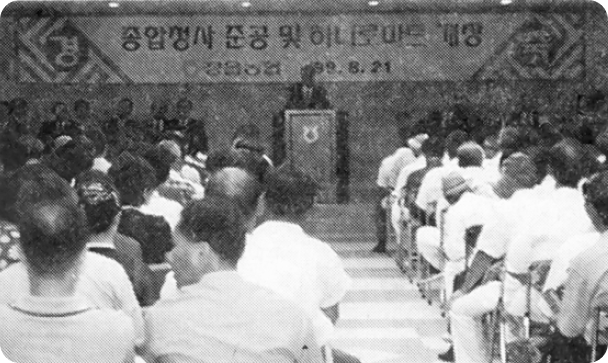
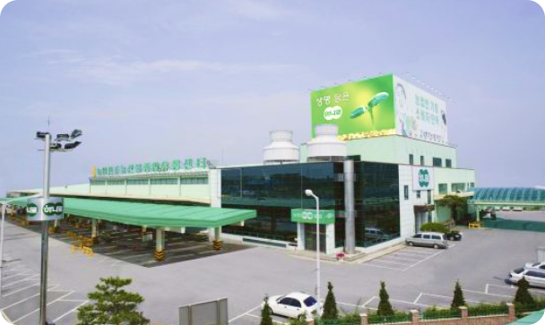
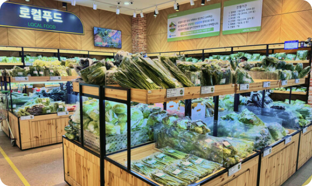
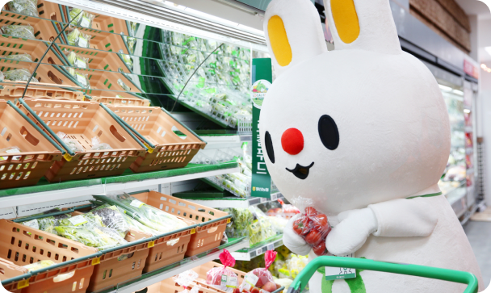

하나로 마트의 성장
하나로마트는 대한민국 농업 유통의 중심에서 농민과 소비자를 이어왔습니다
- 
태동기
1960 - 1970
- 종합농협 발족
- 농촌주민을 위한 신용산업 및 생활물자사업 추진 시작
- 생활문자 사업의 핵심으로 '구판장 운영 개시'
1961
- 조합원에게 생활물자 공급을 위해'농협 연쇄점' 체계화 시작
- 농촌 지역 주민들의 생활 편의 증진 목적
1970
- 농협 연쇄점의 첫 시범케이스로 경기도 이천 장호원 농협연쇄점 개점
- 하나로마트의 실질적 시작점
1971
- 
성장기
1980 - 1990
- 농협 소형 판매시설이 '구장판 연쇄점, 판매장, 직장판, 슈퍼마켓' 등 여러 명칭으로 혼재 운영
1980
- 제주 제주시농협 하나로마트 오라점 개점(노수산물 직판장)
1992
- 제16,17대 농협중앙회장 원철릐 취임
- '농민과 농협이 하나되고, 중앙회와 지역농협 하나되자'는 의미의 '하나로운동' 전개
1994 - 1999
- 서울 도심에 신용,경제 복합사업 시범점포로 '농협하나로마트 종로점' 개점
- 대형 유통매장 '하나로클럽' 브랜드 등장
- 양재점, 창동점 등 주요 거점 대형매장 개점
1995
- 농협 유통기획부 주관으로 명칭 정비 단행
- 중앙회 중소형 판매시설 + 회원농협 연쇄점 = '하나로마트'로 일원화
- 중앙회 대형매장= '하나로클럽'으로 통일
1997
- 제주시농협이 일도지구 대유대림아파트 동측 부지에 3,807m2규모로 하나로마트 제주점 오픈
- 제주 지역하나로마트 본격 경쟁 시작
1999
- 
확장기
2000 - 2010
- 전국적으로 지역 농축협 중심 하나로마트 급속 확산
- 농촌주민을 위한 신용산업 및 생활물자사업 추진 시작
2000
- 제주시농협 제주점, 전국하나로마트 매출1위 달성
- 이후 15년간 부동의 1위 유지(2024년기준)
2009
- 전북 완주 용진농협에서 전국 최초 로컬푸드 직매장 1호점 개설
- 지역 생산 먹거리의 지역 소비 촉진하는 새로운 유통 모델 시작
2012
- 중앙회, 계열사 농축협 구분 없이 전체 매장 명칭을 '하나로마트'로 통일
- 기존 '하나로클럽'도 '하나로마트00점'으로 명칭 변경
2015
- 
성숙기
2010 - 현재
- 한국 내 할인점 매출 순위 4위 달성
- 이마트, 롯데마트, 홈플러스에 이은 4위권 안착
2018
- 로컬푸드 직매장 연매출3,226억원 달성
- 코로나19 상황에서 마스크 구매 거점으로 활약
2020
- (주)노협대전유통, (주)농협충북유통, (주)농협부산경남유통이 (주)농협유통으로 합병
- (주)농협하나로유통은 별도 법인유지
- 전국 하나로마트 매장 수 2,214개 운영
- 로컬푸드 직매장 469개 운영
2021
- 로컬푸드 직매장 675개소 운영
- 53,802며의 농민이 출하
- 로컬푸드 매출 5,455억원 달성
2022
- 전국 하나로마트 매장 수 2,208개
- 제주시농협 제주점 매출 999억원으로 전국1위 유지
- 제주 지역 하나로마트 49개 매장에서 총 6,061억원 매출
2024
- 전국 2,000여 개 이상 매장 운영 중
- 농협유통 + 노협하나로유통 : 68개 직영점
- 지역 농협 : 2,081개 매장
- 로컬푸드 직매장 738개소 운영 (2024년 기준)
- 로컬푸드 연매출 6,571억원 달성